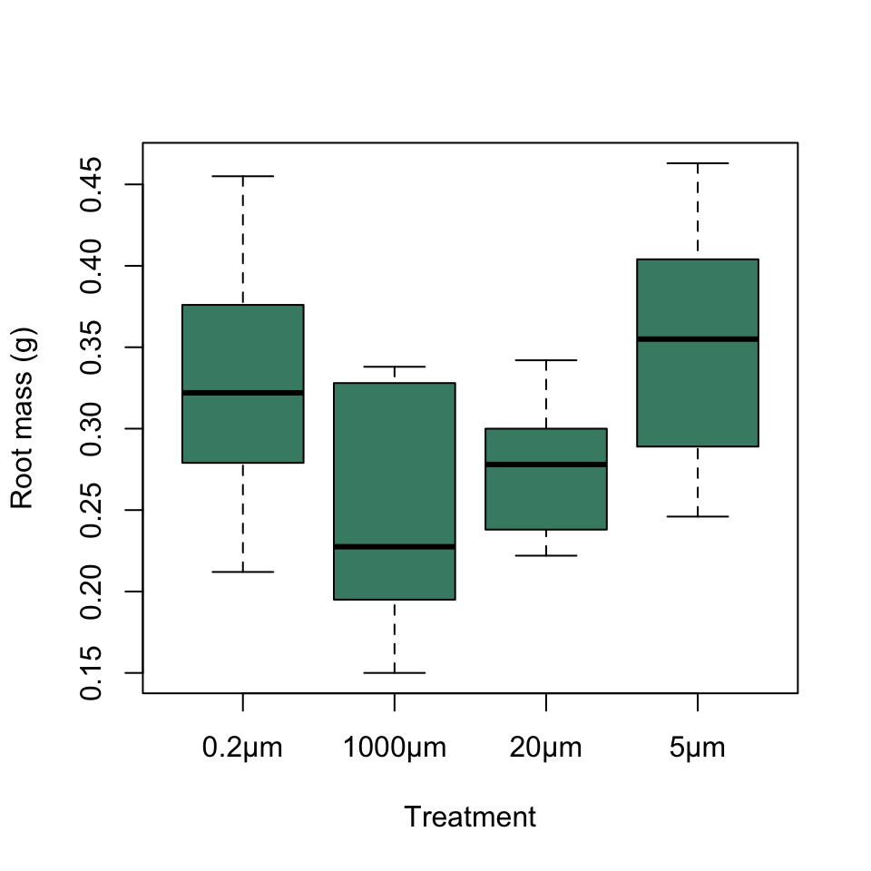

ANOVA and Regression diagnostics
Not all data are suitable for analysis with linear models. The way the analysis is calculated is based on a number of assumptions about the distribution of the data and if these are not met then the conclusions from the analysis can be incorrect. This video introduces the important concepts about linear model assumptions and describes how to test these using the diagnostic plots that R can produce for you if you’ve fitted a linear model to your data. It’s a bit long (sorry) so feel free to pause it and make a cup of tea as many times as you like.
Diagnostics for the root mass ANOVA from tutorial 1
To recap, the important assumptions about the data for linear model are:
Data points are independent — in other words, each data point is a separate measure of the effect in question. This is arguably the most important assumption of all, but it is not something that can be checked after analysis. Rather, we should be making sure that our data are independent by careful study design.
The errors are normal — here, error refers to the remaining variance in the data that we cannot explain, so in this case the distribution of the data points around the estimated means should be normal, or at least approximately so. NB you might have read or been told that the important assumption is that the data overall follow a normal distribution. This is not true and in fact the response variable can have any distribution so long as the errors are normal.
The variance is equal between groups — for the present analyses the groups are the different treatment groups, and for our ANOVA to be reliable the variance of each group should be approximately the same.
Linearity — this means that when we have a continuous explanatory variable, we assume that the relationship between the explanatory variable and the response variable is best described by a straight line, rather than a curve.
Fortunately, linear models are quite resilient to deviations from these assumptions. They will continue to produce reliable results when the errors are somewhat non-normal or there are moderate differences in variance between groups so long as the sample size is reasonably large and the design is roughly balanced (meaning that the sample sizes are the same or nearly so for each group). This means that unless our sample size is very small or the design is badly unbalanced (e.g. two groups with 30 measurements and one with 3) we do not have to be especially picky and can ignore minor violations of our assumptions. Nonetheless, major violations of these assumptions will invalidate our analysis so it’s important to check these every time you run one of these analyses.
Let’s go back to the ANOVA we used for the root mass data in tutorial 1. Just to remind you, these are data from a study of how Plant-Soil Feedback (PSF) affects the growth of ragwort plants Jacobea vulgaris, originally published by Wang et al1. Ragwort plants were grown in soil which had been inoculated with water from soil which ragwort had previously grown in, and the water was passed through a series of filters to remove various components of the soil ranging from small invertebrates to bacteria. This boxplot shows the distribution of the data within the four factor levels for inoculum:

This is the ANOVA table we generated, which tells us that we have a significant effect of the factor inoculum.
# Calculate ANOVA and save fitted model to object R1
R1 <- lm(root_mass ~ inoculum, data = ragwort)
# Generate ANOVA table
print(anova(R1))Analysis of Variance Table
Response: root_mass
Df Sum Sq Mean Sq F value Pr(>F)
inoculum 3 0.084996 0.0283321 6.3813 0.001193 **
Residuals 41 0.182035 0.0044399
---
Signif. codes: 0 '***' 0.001 '**' 0.01 '*' 0.05 '.' 0.1 ' ' 1To bring up the diagnostic plots for a linear model you can just use the plot() function with the model object as an argument, e.g. plot(modelname). This will give four separate plots by default, but the first two of these are really the most important so we’ll use the which = argument to plot just these. Firstly the diagnostic plots for the root mass ANOVA model.
# Two plots side-by-side please
par(mfrow = c(1,2))
plot(R1, which = 1:2)
Diagnostic plots for the root mass ANOVA
The left hand plot shows us the residuals versus the fitted values. This gives us lots of information about how good our model is at describing the patterns in the data and also lets us check for increases or decreases in variance with increases in the fitted values. Our plot has the residuals arranged in four groups. This is because there are only four fitted values, corresponding to the mean for each of the four factor levels. There are no obvious patterns in this plot that might cause concern. The degree of spread for each group is roughly the same, so the assumption of equal variances is probably OK, and there are no obvious extreme values and no indication of anything else amiss.
The right hand plot gives us information about how closely the residuals conform to a normal distribution. If they were perfectly normal they would all lie on the dotted line, but in practice this never happens. Here most of our data points are on or very close to the line but the ones with the most negative residuals are somewhat above the line and the ones with the most positive residuals are somewhat below the line. This tells us that the distribution of residuals has “thin tails” (or to use the statistical jargon it is somewhat “paltykurtotic”). In other words, the most negative and the most positive values are closer to zero we would expect were they following a normal distribution.
Is this a problem for our analysis? Not really. As we’ve discussed, linear models are robust to small violations of these assumptions, and this is only a small violation. The residuals are symmetrically distributed, with no skew, and they do at least roughly conform to a normal distribution, albeit one with somewhat skinny tails.
Finally, if you’re wondering what the numbers on the plots are, R labels the three most extreme residuals on each plot with their index number. This is helpful and makes it easy to identify them if you need to do anything further.
1 Wang, M., Ruan, W., Kostenko, O., Carvalho, S., Hannula, S.E., Mulder, P.P.J., Bu, F., van der Putten, W.H. & Bezemer, T.M. (2019) Removal of soil biota alters soil feedback effects on plant growth and defense chemistry. The New phytologist, 221, 1478–1491.
Exercise 1: diagnostics for the leaf mass ANOVA
In tutorial 1 you fitted an ANOVA to another variable from the dataset on ragwort plant growth and PSY, testing whether the leaf masses of the plants varied between inoculum treatments. As a reminder here is the ANOVA:
# Calculate ANOVA and save fitted model to object R1
L1 <- lm(leaf_mass ~ inoculum, data = ragwort)
# Generate ANOVA table
print(anova(R1))Analysis of Variance Table
Response: root_mass
Df Sum Sq Mean Sq F value Pr(>F)
inoculum 3 0.084996 0.0283321 6.3813 0.001193 **
Residuals 41 0.182035 0.0044399
---
Signif. codes: 0 '***' 0.001 '**' 0.01 '*' 0.05 '.' 0.1 ' ' 1We have a significant effect of the inoculum factor here as well, indicating that at least one mean is significantly different from at least one other mean.
See if you can plot the two diagnostic plots for your fitted ANOVA on leaf mass.
# Calculate ANOVA and save fitted model to object R1
L1 <- lm(leaf_mass ~ inoculum, data = ragwort)# You can use the code as before but substitute
# the name of your ANOVA object# Don't forget to set par(mfrow = c(1,2))
# to get the two plots next to each other# This is the solution
par(mfrow = c(1,2))
plot(L1, which = 1:2)Have a look at these plots. What do you see?
Click here for more on the diagnostics
As you’ve probably seen the diagnostics for the leaf mass model are mostly well behaved, but there is one data point (30) which has an anomalously high positive residual - it seems to be sufficiently different from the others that we should maybe take a closer look. Let’s visualise this particular point: here we’ll draw a stripchart() and draw in data point 30 as a solid data point using points() to make it clear where it is.
stripchart(
leaf_mass ~ inoculum,
data = ragwort,
pch = 1,
vertical = TRUE,
xlab = "Treatment",
ylab = "Leaf mass (g)",
col = "aquamarine4"
)
points(ragwort$leaf_mass[30] ~
ragwort$inoculum[30], pch = 16)
This point is in fact one of the “outliers” that showed up in the boxplot of these data that we looked at in the previous tutorial. At the time we suggested that it wasn’t sufficiently different from the rest of the data to justify any special treatment such as exclusion. Now that we have this further evidence from the diagnostic plots, however, we might want to look rather more closely at whether this particular point is having any substantial effect on the conclusions from the ANOVA. We can refit our ANOVA with the data point removed by using the subset argument.
L2 <- lm(leaf_mass ~ inoculum, data = ragwort, subset = -30)
summary(L2)
Call:
lm(formula = leaf_mass ~ inoculum, data = ragwort, subset = -30)
Residuals:
Min 1Q Median 3Q Max
-0.113271 -0.036885 -0.009764 0.037582 0.094771
Coefficients:
Estimate Std. Error t value Pr(>|t|)
(Intercept) 0.44073 0.01941 22.703 < 2e-16 ***
inoculum1000µm -0.21970 0.02531 -8.680 9.70e-11 ***
inoculum20µm -0.12293 0.02531 -4.857 1.87e-05 ***
inoculum5µm -0.04246 0.02307 -1.841 0.0731 .
---
Signif. codes: 0 '***' 0.001 '**' 0.01 '*' 0.05 '.' 0.1 ' ' 1
Residual standard error: 0.05136 on 40 degrees of freedom
Multiple R-squared: 0.7215, Adjusted R-squared: 0.7006
F-statistic: 34.54 on 3 and 40 DF, p-value: 3.468e-11The ANOVA is still highly significant (the last row of the summary gives the F-statistic from the ANOVA table) but have the other details changed? Let’s compare it with the coefficients table for previous model.
summary(L1)
Call:
lm(formula = leaf_mass ~ inoculum, data = ragwort)
Residuals:
Min 1Q Median 3Q Max
-0.12737 -0.03873 -0.01280 0.03720 0.23963
Coefficients:
Estimate Std. Error t value Pr(>|t|)
(Intercept) 0.44073 0.02407 18.308 < 2e-16 ***
inoculum1000µm -0.21970 0.03139 -7.000 1.65e-08 ***
inoculum20µm -0.12293 0.03139 -3.917 0.000333 ***
inoculum5µm -0.02836 0.02837 -1.000 0.323317
---
Signif. codes: 0 '***' 0.001 '**' 0.01 '*' 0.05 '.' 0.1 ' ' 1
Residual standard error: 0.06369 on 41 degrees of freedom
Multiple R-squared: 0.6463, Adjusted R-squared: 0.6204
F-statistic: 24.97 on 3 and 41 DF, p-value: 2.37e-09In general the new model is a somewhat better fit all round: the R-squared values are higher, the F-statistic is larger and the marginal p-values in the coefficients table are smaller. The marginal p-value for the contrast between the 5µm and the 0.2µm treatment has also changed from 0.323, nowhere near statistical significance, to 0.0731, making this contrast now close to significance. What to do? This single data point is having some effect on our conclusions and our confidence in the patterns in these data so should we just remove it and present the analysis without it? Different people might give you different answers here but your author’s opinion is no: unless there is further, independent evidence that indicates a potential problem with this data point (e.g. was it noted during the experiment as being different from the rest? Was it accidentally given extra water? Was it left in a better lit position than the others for some reason) there is still no good reason to exclude it. The best thing to do is just to note in our report that there is one data point which is rather influential and that exclusion of it leads to a somewhat different result, giving us less confidence in whether there is a difference between two of the treatments or not. This way we present the reader with as much information about how certain or uncertain we are about the patterns in our data as we can and let them make up their own mind.
Exercise 2: analysing ungulate abundance near villages in Gabon
As a second exercise, we’ll look at a second data set from the study of animal abundance and distance to villages in Gabon that we previously met in the tutorial on linear regression (data from Koerner et al. 20171). Here we’ll look at how the relative abundance of ungulates changes with distance from the nearest village. The data are loaded and the data frame is called gabon. Running str() lets us check that everything has imported properly.
str(gabon)'data.frame': 24 obs. of 14 variables:
$ TransectID : int 1 2 2 3 4 5 6 7 8 9 ...
$ Distance : num 7.14 17.31 18.32 20.85 15.95 ...
$ HuntCat : Factor w/ 3 levels "High","Moderate",..: 2 3 3 3 3 3 3 3 1 1 ...
$ LandUse : Factor w/ 3 levels "Logging","Neither",..: 3 3 3 1 3 3 3 1 2 1 ...
$ NumHouseholds : int 54 54 29 29 29 29 29 54 25 73 ...
$ Veg_Rich : num 16.7 15.8 16.9 12.4 17.1 ...
$ Veg_Canopy : num 3.78 3.75 3.43 3.75 3.88 2.5 4 4 3 3.25 ...
$ Veg_Understory: num 2.89 3.88 3 2.75 3.25 3 2.38 2.71 3.25 3.13 ...
$ RA_Apes : num 1.87 0 4.49 12.93 0 ...
$ RA_Birds : num 52.7 52.2 37.4 59.3 52.6 ...
$ RA_Elephant : num 0 0.86 1.33 0.56 1 0 1.11 0.43 2.2 0 ...
$ RA_Monkeys : num 38.6 28.5 41.8 19.9 41.3 ...
$ RA_Rodent : num 4.22 6.04 1.06 3.66 2.52 1.83 3.1 1.26 4.37 6.31 ...
$ RA_Ungulate : num 2.66 12.41 13.86 3.71 2.53 ...As always, the first thing to do is to look at a scatterplot. The variable name for ungulate relative abundance is RA_Ungulate and that for distance is Distance.
# Use the plot() function and put in a formula
# with RA_Ungulate as the response variable, then
# a tilde ~ and then the explanatory variable which
# is Distance
#
# Specify appropriate x- and y-axis labels using
# xlab = and ylab =
#
# You also need to include the data = gabon argument#Here's a code framework for you to adapt:
plot(response ~ explanatory,
data = gabon,
xlab = "",
ylab = "")#Here's the solution:
plot(RA_Ungulate ~ Distance,
data = gabon,
xlab = "Distance from nearest village (Km)",
ylab = "Relative abundance of ungulates")Looking at the plot, you can see that there seems to be something of a positive relationship between the variables, with higher values for ungulate relative abundance associated with longer distances from the nearest village. The pattern is less clear than for our birds however, and the data seem to be rather wedge-shaped, with more spread associated with longer distances. Fit a model and save it as an object called U1, and then call up a summary using summary()
#Here is a code framework to help you
Name <- lm(response ~ explanatory, data = gabon)
summary()# This is the solution
U1 <- lm(RA_Ungulate ~ Distance, data = gabon)
summary(U1)OK, that seems to have worked and the summary is telling us that we have a significant relationship between distance and ungulate relative abundance. Let’s jump straight in and look at the diagnostics. Once again we just want the first two plots so specify which = 1:2 as an argument to plot().
U1 <- lm(RA_Ungulate ~ Distance, data = gabon)# Just use plot() with the name of your saved
# object as the first argument and which = 1:2
# as the second argument# This is the solution
plot(U1, which = 1:2)Look at these residual plots and try to answer these questions.
Exercise 3 dealing with heteroskedastic data
The residuals versus fitted values plot for our ungulate regression confirms what we thought might be the case with regards to the increasing variance in the data as the distance from the nearest village increases. This means that we have heteroskedastic data and this is not an ideal one for fitting a linear model. We have a number of options now to try to deal with this. They are:
- Ignore it on the grounds that linear models are robust to violations of these assumptions
- Use an analysis which allows us to explicitly model the changing variance with the increasing distance (e.g. a weighted least squares approach using the
gls()function from the nlme package). - Transform our response variable somehow so that it is better behaved and reanalyse.
Option 1 has its merits and we could consider this depending on what we’re trying to do. If we’re really just concerned about demonstrating that there’s a relationship between the two variables and aren’t particularly bothered about how well our line is estimated this might be OK (although if that’s the case why not just do a correlation analysis?). If, however, we want do something like compare the degree of change with distance between ungulates and other mammal groups then we want our estimate of the slope and intercept to be as good as possible and we might not want to just leave it as it is.
Option 2 is definitely a possibility but it’s a little advanced for our purposes and probably best left for another day.
This leaves us with option 3: transform our data and reanalyse. There are lots of options here and the most common approach would be repeat the analysis with log transformed data: taking logs has a bigger effect on large values than on small values, so it tends to reduce variance more for large values than for small ones. Log transforming these data isn’t completely straightforward, however, because we have one data point with a value of zero and the log of this is -infinity. One solution to this is to add some constant, for example 1, to each datapoint before taking logs. This works and is something that is done a lot but it does mean we’re changing our data quite a lot before analysing it and also the choice of constant (should we use 0.1? 1? 100?) can alter the distribution of the data and change the output of the analysis.
An alternative to log-transformation is to use a square root transformation. This alters the distribution of the data somewhat less than a log transformation and also avoids the problem with the zero value in the dataset. Try refitting the model to the square root of relative abundance and check the diagnostic plots again. Remember that you can do the transformation within the formula in the lm() function call. Call your new model object U2.
# The function to calculate a square root is sqrt()# The arguments you want in your lm() function call is
sqrt(RA_Ungulate) ~ Distance, data = gabon# To plot the diagnostics you want:
plot(U2, which = 1:2)# This is the solution
U2 <- lm(sqrt(RA_Ungulate) ~ Distance, data = gabon)
plot(U2, which = 1:2)You can see that the residuals versus fitted values plot no longer has that wedge shape, and also that the qq plot looks rather better. Let’s look at the summary output for our new model.
U2 <- lm(sqrt(RA_Ungulate) ~ Distance, data = gabon)# You just need to call summary on the U2 object
summary(U2)Here are some questions about the summary table. Remember this regression was fitted to the square root transformed relative abundance data, not the raw data.
Finally, we need to visualise our data with the fitted model. We could plot the transformed data with the straight line we’ve fitted, but that would not allow for useful comparisons with other analyses where we haven’t transformed the data, such as the birds. Furthermore, plotting the transformed data it makes it harder to get a good understanding of the pattern we’ve ddescribed in our data. A better option is to plot the back transformed predicted values onto the untransformed data. There are a variety of ways to do this but one option is to use the curve() function like this.
# Plot the data
plot(RA_Ungulate ~ Distance,
data = gabon,
xlab = "Distance from nearest village (Km)",
ylab = "Relative abundance of ungulates")
# Generate a function which calculates backtransformed
# predicted values
U2_fitted <- function (x) (0.6997 + 0.0912 * x)^2
# Draw the function on with curve. NB add = TRUE
# means that the curve is plotted over the previous plot,
# otherwise it will generate a new graph.
curve(U2_fitted, add = TRUE)